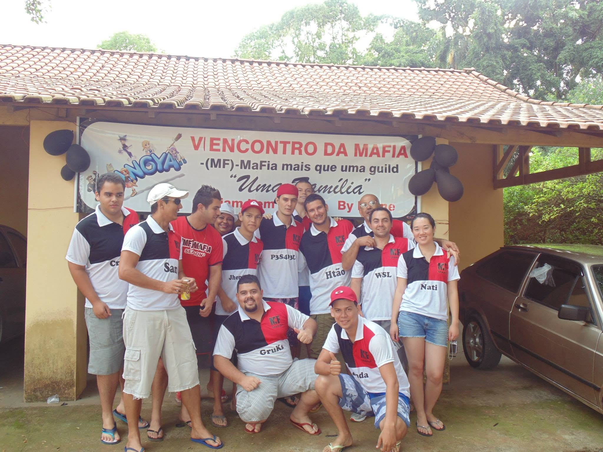

HALLOWEEN NO GREEN
MEU ACERVO PESSOAL DE PANGYA
Minhas jogatinas.
Minhas memórias.
Cada tacada, uma lembrança. Vídeos, calculadoras e dicas de Pangya com L3ND4 GAMES.
PANGYA ✦ VÍDEOS ✦ CALCULADORAS ✦ DICAS
UM SAVE FORA DO JOGO
Algumas partidas acabam.
As histórias ficam.
Jogatinas e encontros que fazem parte da minha história.

ENCONTRO DA MAFIA · 2013UMA MEMÓRIA PARA REVISITAR
Mais que uma guild.
Uma família.
São Carlos, SP · 2013
As amizades do Pangya também fazem parte deste acervo. Relembre o encontro da MaFia nas fotos e conheça a trajetória da guild no relato de MF Lenne.
EXPLORE PANGYA
Seu próximo destino em Pangya
BIBLIOTECA L3ND4
Bora dar o play?
Esta memória não foi encontrada. Explore o acervo abaixo.
✦ Modo demonstração · Os cards são exemplos. Adicione seus vídeos em config.js para começar.
Nenhum vídeo por aqui.
Tente outro mapa, jogador ou ano do acervo.
AO VIVO, DO NOSSO JEITO
A próxima partida
fica melhor junto.
Um espaço para acompanhar as lives, trocar ideia e fazer parte de cada jogada.
CANAL A CONFIGURARSeu ponto de encontro na Twitch
O canal ainda não foi configurado.
Em breve, a resenha começa aqui.